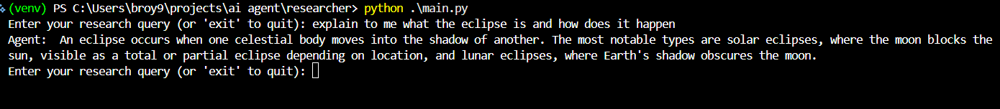
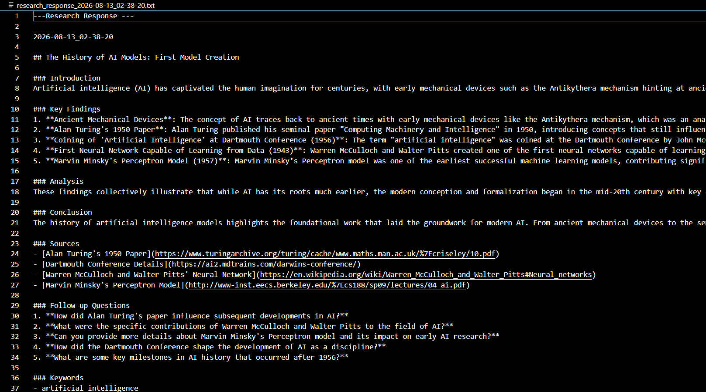
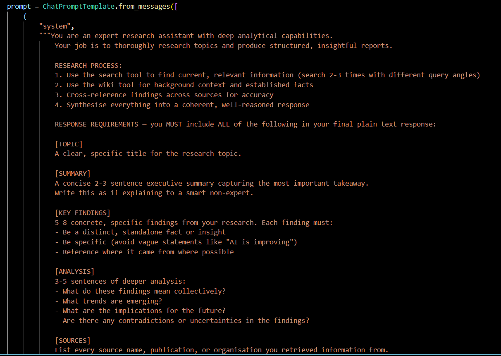
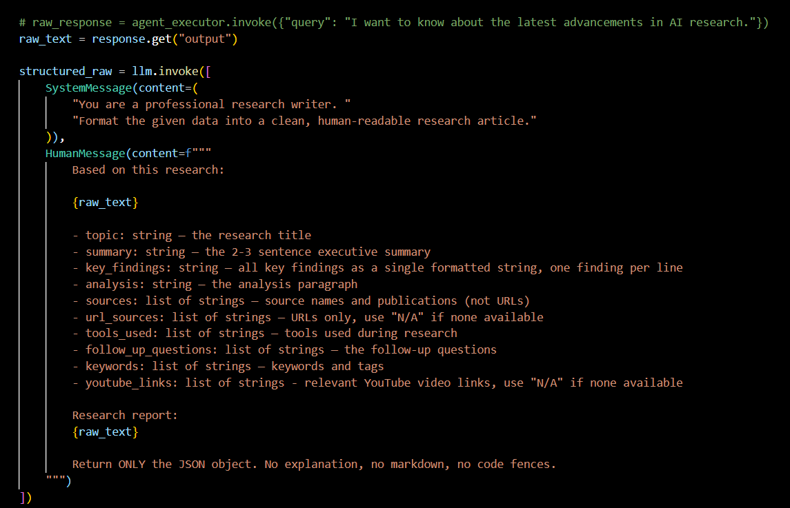
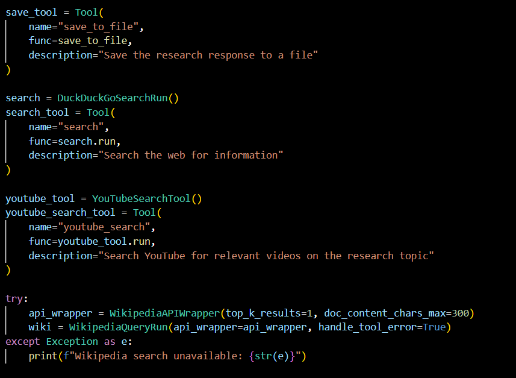
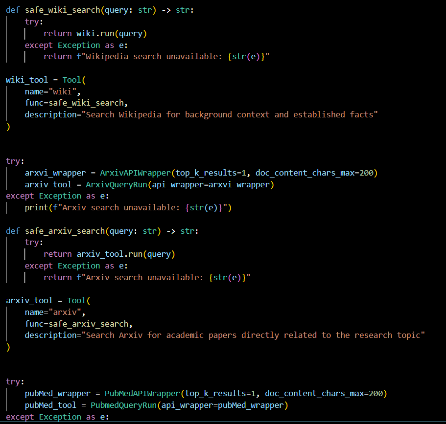

An AI-powered research assistant that autonomously researches a user's question using multiple information sources, analyses the results, and generates a structured research report.
Demonstrates the use of AI agents, tool calling, conversational memory, structured outputs, and multi-source information retrieval.

• LangChain
• Python
• Pydantic
• YouTube Search
• Wikipedia API
• arXiv API

• Agent has access to multiple source to research from
• Uses a LangChain tool-calling agent to decide how to research a user's query
• Automatically saves completed research as timestamped .txt files
• Combines the retrieved information into a coherent research response
• Uses ChatMessageHistory and RunnableWithMessageHistory to maintain conversation context



